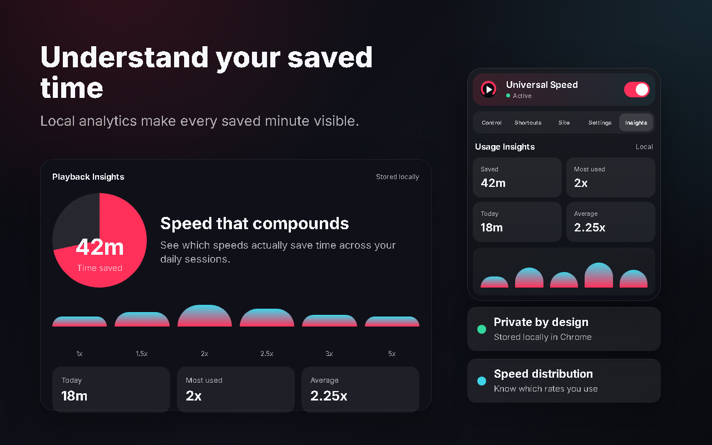
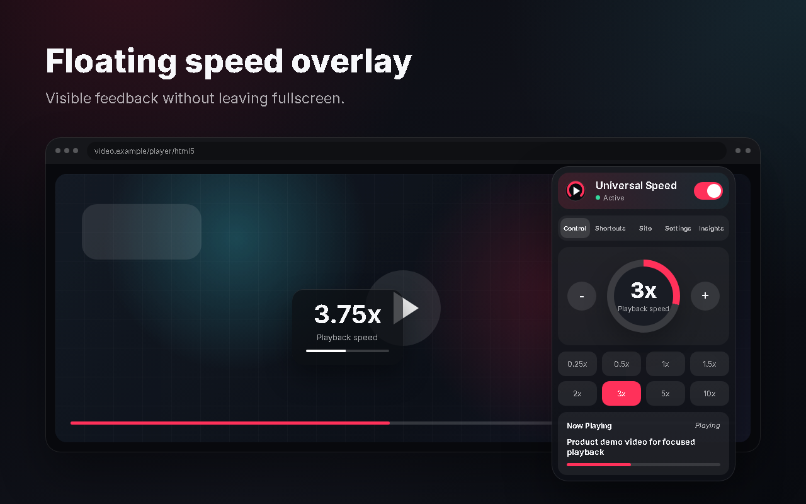

Precise speed presets
Move from 0.25x to 10x, nudge by 0.25x, or jump directly to common speeds from the popup.
Chrome extension for HTML5 video
A polished speed controller with presets, shortcuts, mouse wheel and pinch gestures, site memory, fullscreen overlays, and local usage insights.

Everything in one control layer
Designed for people who watch lectures, tutorials, livestreams, sports, product demos, and long-form video across the web.
Move from 0.25x to 10x, nudge by 0.25x, or jump directly to common speeds from the popup.
Use editable shortcuts, Ctrl + mouse wheel, or pinch in / pinch out gestures on supported touchpads.
Remember speeds globally, per website, or per YouTube channel so each player opens where you expect.
A restrained overlay confirms speed changes without pulling you out of the video.
Screenshots

Large speed readout, one-click presets, press-and-hold adjustments, and current video context in one focused popup.

Editable shortcuts, conflict checks, boost mode, mouse wheel support, and pinch gesture control.

Per-site rules, memory modes, access gating, overlay preferences, startup speed, and native-control behavior.

See time saved, most-used speeds, daily usage, and session averages without sending data anywhere.

Speed changes stay visible and readable while the interface remains calm and unobtrusive.
Site rules
Keep global defaults simple, then override behavior for specific domains or YouTube channels. Access rules let you allow all sites, limit the extension to approved domains, or block specific domains.
Default controls
Every shortcut can be changed from the popup, and the extension avoids firing while you type in comments, search boxes, or editable fields.
Privacy first
Settings, shortcuts, site rules, and usage insights are stored locally in Chrome storage. The extension only needs permissions required to detect and control HTML5 video on the active page.
Install
Download or clone the GitHub repository.
Open chrome://extensions and enable Developer mode.
Click Load unpacked and select the project folder.
Open an HTML5 video and use the toolbar popup, widget, or shortcuts.